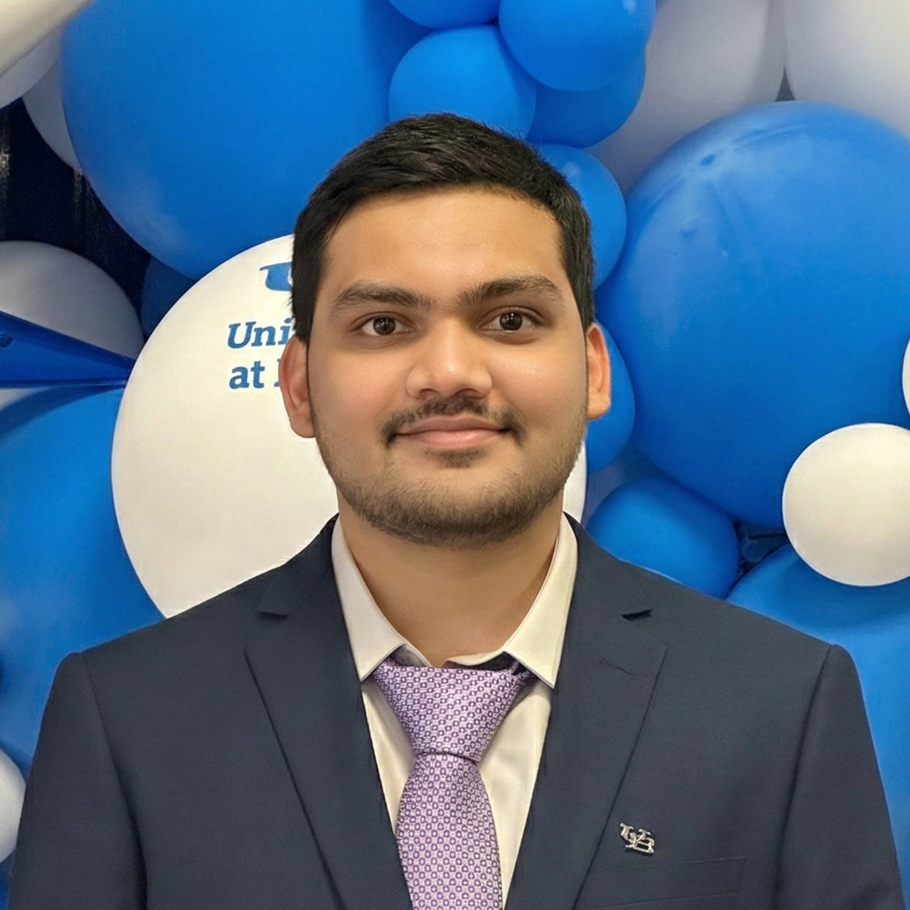

Career Summary
I am a Ph.D. student at the University at Buffalo, advised by Prof. Roshan Ayyalasomayajula. My research focuses on wireless sensing for robot navigation and localization. I work on building reliable and efficient localization and navigation methods for robots with limited power, memory, and computation. My current work studies how wireless signals can help robots operate in environments where cameras and traditional vision systems do not work well. My long-term goal is to bring wireless sensing to robots of all sizes, from small robots to large autonomous systems, to improve localization and perception. I am also interested in multi-robot systems and swarm intelligence, where groups of robots can work together, share information, and make decisions collectively in complex environments.
Work Experience
Teaching Assistant
- CSE676, Deep Learning.
- CSE589, Data Intensive Computing.
- CSE574, Machine Learning.
Research Assistant
WiRES Lab – Wireless Robotics & Embedded Systems
- Developed and validated wireless propagation models for indoor/outdoor environments using RSSI, CSI & FTM data.
- Analyzed WiFi channel behavior, multipath effects, and interference patterns for single-antenna localization.
- Designed experiments to characterize packet-level performance and signal degradation across varying distances and obstacles, and built Python-based pipelines for telemetry processing.
- FTM timestamps correction using CSI in single-antenna systems to improve localization accuracy.
- Implementing real-time closed-loop control for resource-constrained robots by integrating Wi-Fi-based state estimation into the navigation stack.
DRoNES Lab – Distributed Robotics & Networked Embedded Systems
- Adapted ORB-SLAM2 for multi-drone deployment, integrating wireless communication to enable cooperative localization and loop-closure coordination.
- Developed stereo visual odometry for F1Tenth in Gazebo, achieving 17% higher tracking accuracy on KITTI via bundle adjustment.
- Integrated Cartographer for LiDAR mapping, optimized Follow-the-Gap for obstacle avoidance, and implemented Pure Pursuit waypoint navigation, increasing steering accuracy by 33% over PID control.
A2IL Lab – Artificial Intelligence Innovation Laboratory
- Architected a real-time computer vision pipeline utilizing head-mounted cameras to automate document digitization, replacing manual flatbed scanning.
- Streamed image data over 5GHz Wi-Fi to a centralized server for low-latency processing and reconstruction.
- Deployed DGAN and YOLO architectures to enhance document image quality and localize spatial placement for automated database indexing.
- Achieved an 80% reduction in manual labor by transitioning from scanner-assisted workflows to a hands-free, automated capture system.
Skills & Tools
Languages
- C
- C++
- Python
Technologies
- ROS
- ROS2
- MATLAB
- WiFi CSI
- UWB
- TDOA
- EKF
- FTM
- Factor Graphs
Wireless Concepts
- OFDM
- Path Loss Modeling
- Multipath Propagation
- Doppler
Platforms & Hardware
- Jetson TX2/NX/Nano
- Raspberry Pi
- ESP32 (C3/S3/C5)
- BNO086
- VLP-32
- Realsense
Education
-
PhD in Computer Science & EngineeringUniversity at Buffalo, SUNYJan 2025 - Present
-
MS in RoboticsUniversity at Buffalo, SUNYAug 2022 - May 2024
Language
- English (Professional)
- Hindi (Professional)
Interests
- Badminton
- Cooking